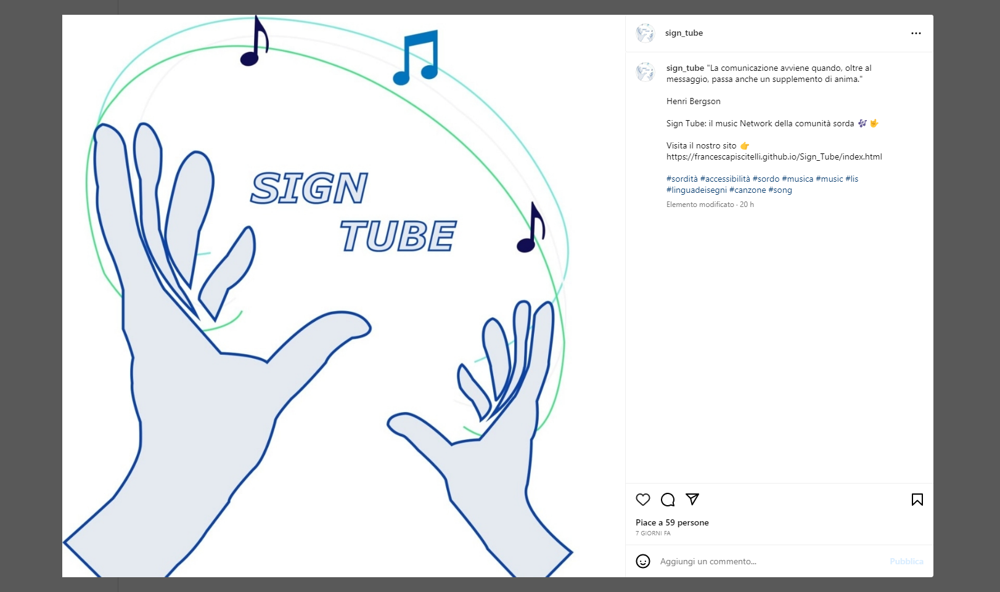
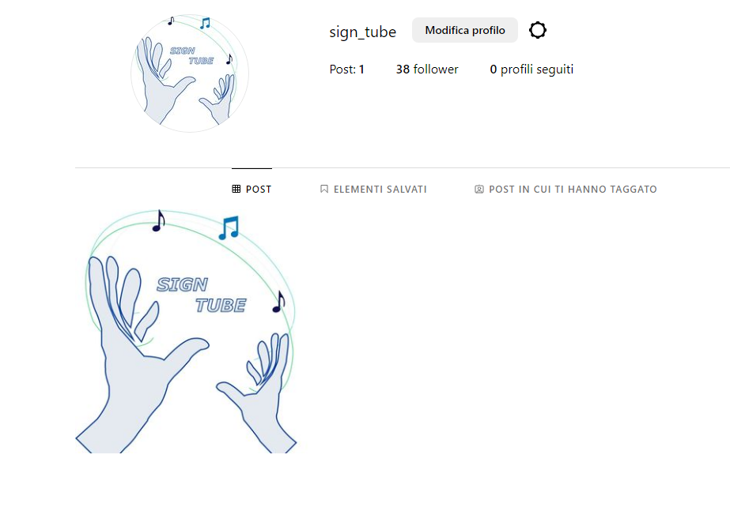

DOCUMENTAZIONE
ABSTRACT
Sign Tube è un sito web che si propone come un network di musica per la comunità sorda.
La piattaforma offre in un'unica soluzione servizi e risorse di vario genere per avvicinare e orientare i sordi a una rete più inclusiva dove la musica fa da protagonista.
L'idea di fondo è quella di estendere l'esperienza di fruizione della musica a chi è affetto dalla patologia e sopperire all'attuale mancanza di un progetto simile in rete.
Il sito porta avanti anche una mission di sensibilizzazione degli udenti alla sordità, nonché alle possibilità e all'importanza dell'accessibilità digitale.
PROJECT MANGAMENT PLAN
Benchmarking
Obiettivi
L'obiettivo principale del sito è quello di creare una piattaforma di musica disegnata ad hoc per i sordi.
Per portare avanti il progetto, vengono proposte attività di diverso tipo che possano rendere l'esperienza della musica per un non udente più completa e accessibile.
Dette attività si diramano in cinque sezioni principali:
Target
Il sito si rivolge in primis a persone non udenti e a familiari di persone non udenti.
. La piattaforma è pensata anche per tutti coloro che abbiano curiosità o necessità di conoscere meglio la sordità. Si pensi, ad esempio, agli operatori socio sanitari o agli insegnanti che per la natura del loro lavoro potrebbe trovare utile e necessario avere risorse per interfacciarsi meglio con persone non udenti.
Competitors
I principali competitors individuati e analizzati sono stati YouTube, il sito web dell’Ente Nazionale Sordi (ENS) e il sito inglese Music and the Deaf.
YouTube vanta ricchissimo catalogo di contenuti. Tra questi, si trovano anche video di perfomer che traducono canzoni in LIS o insegnano la LIS. Tuttavia la piattaforma in sé non è disegnata per avere come target specifico la comunità sorda. Inoltre, il catalogo di canzoni tradotte in LIS attualmente disponibile è piuttosto ridotto. Più in generale, il sito risulta dispersivo e poco funzionale per il target del progetto individuato.
Il sito dell'ENS funziona da indispensabile portale di riferimento per la comunità sorda, ma la musica non rappresenta il "core" dei suoi progetti.
Music and the Deaf è un ente di beneficienza che organizza attività e workshop volte all’alfabetizzazione musicale e canonica più in generale di non udenti, soprattutto bambini e giovani adulti. Inoltre, organizza workshop ed eventi.
Struttura e Layout
Architettura del sito

Wireframe
Wireframe Home

Wireframe about

Wireframe Musica

Look and Feel
Il font utilizzato è "Lexend" sans-serif.
I colori impiegati sono stati principalmente il nero e il bianco per le scritte e varie sfumature di blu: #BBCAD4 per lo sfondo, #16528E per il menù di navigazione e i bottoni. Per alcuni elementi è stato scelto il verde e il grigio per l'hover.
Sia la palette di colori che il font rispecchiano la volontà di rendere il sito accessibile anche per i daltonici. Il Lexend è, infatti, un font consigliato da Google Fonts come tra i migliori per chi soffre di daltonismo, in quanto di più facile lettura. La palette rispecchia l'idea di utilizzare colori contrastanti, in risalto tra di loro, anch'essi più facilmente percepibili dai daltonici.
Altri elementi, come le breadcrumbs e il testo a scorrimento, rappresentano un supporto e uno stimolo visivo per persone non udenti, fondamentale per un target di questo tipo. Inoltre, è stata data importanza alla consistenza tra gli elementi del sito al fine di rendere la navigazione lineare e intuitiva.
Il logo è stato creato da 0. Rispecchia uno stile minimale, ma rappresentativo per i due temi principali del sito: musica e sordità. Le mani e il nome del sito, in particolare, ricordano l'importanza e l'efficacia dei gesti e, quindi, della Lingua dei Segni Italiana per la comunità sorda.
Linguaggi utilizzati: HTML, CSS, JavaScript.
Strumenti:
Gli strumenti tecnologici impiegati a supporto della progettazione web sono:
COMMUNICATION STRATEGY
Background
Ad oggi non esiste una piattaforma che offre servizi di musica pensati ad hoc per la comunità sorda. Non esiste neppure un sito web che raccolga iniziative, eventi, attività di vario genere che coinvolgano la musica e i non udenti allo stesso tempo.
Sign Tube, pertanto, si propone come soluzione a queste mancanze. In questo senso, i videocorsi aiutano all'alfabetizzazione musicale; i workshop propongono una formazione più professionale nel settore della musica; la sezione musica si trasforma in un grande
catalogo a cui i non udenti possono fare riferimento per poter fare un'esperienza di fruizione della musica personalizzata.
Ancora, il sito orienta l'utente anche alla scoperta di corsi di musica esterni, una volta rilevati sul territorio nazionale, e dei corsi ENS per apprendere la LIS.
Obiettivi comunicativi
Gli obiettivi comunicativi prefissati sono:
Target Audience e Messaggio
Il sito si rivolge principalmente alla comunità sorda, ma la piattaforma è pensata anche per tutti coloro che abbiano curiosità o necessità di conoscere meglio la sordità.
Il progetto verrà pubblicizzato in due modi: prima di tutti sui social, poi, verranno organizzati eventi ad hoc.
L'intenzione è di contattare anche collaboratori che lavorano a stretto contatto con non udenti. In questo senso il progetto vuole raggiungere anche la parte di utenza non affetta dalla patologia, il cui impegno e la cui collaborazione costituiscono il valore aggiunto per diffondere e migliorare l'accessibilità digitale del sito.
Promozione
Il sito viene promosso attraverso i social, in particolare Facebook, Instagram e YouTube: per ognuno è stato creato l'account del sito.
Data la natura del progetto, i suoi obiettivi di sensibilizzazione alle tematiche discusse e l'interesse di coinvolgere una rete di utenti più estesa della sola comunità sorda, la promozione conta molto
anche sul passaparola attraverso piattaforme di messaggistica quali Telegram e Whatsapp.
In futuro, si pensa di integrare l'attività di promozione con eventi, live conference e incontri dedicati.
Valutazione dei risultati
Di seguito, è riportata la dimostrazione del raggiungimento degli obiettivi comunicativi prefissati.

